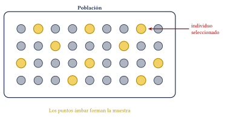
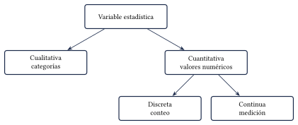
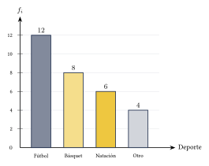
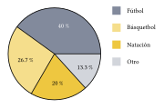
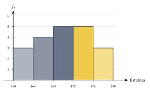
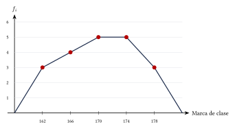

Capítulo 45
Estadística descriptiva
IPN CENEVAL
La estadística descriptiva permite organizar, resumir y representar datos.
En este capítulo aprenderás a identificar poblaciones y muestras, clasificar variables, construir tablas de frecuencias y elegir la gráfica más adecuada.
45.1 Población y muestra#
La población es el conjunto completo de individuos u objetos que se desean estudiar.
Una muestra es un subconjunto de la población.
Cada elemento de la población se denomina individuo o unidad estadística.

Una preparatoria tiene \(1200\) estudiantes. Para estimar la estatura promedio, se eligen al azar \(80\) estudiantes.
Ver solución
- Población: \[1200\text{ estudiantes}.\]
- Muestra: \[80\text{ estudiantes}.\]
- Individuo: \[\text{cada estudiante}.\]
- Variable: \[\text{estatura}.\]
Una muestra debe ser suficientemente grande y representativa.
Si ciertos grupos tienen mayor o menor probabilidad de ser elegidos, puede aparecer un sesgo de selección.
45.2 Parámetro y estadístico#
Un parámetro es una medida numérica que describe una población.
Un estadístico es una medida numérica calculada a partir de una muestra.
Por ejemplo:
- la estatura promedio de los \(1200\) estudiantes es un parámetro;
- la estatura promedio de los \(80\) estudiantes seleccionados es un estadístico.
El estadístico se utiliza para estimar el parámetro.
45.3 Variables estadísticas#
Una variable estadística es una característica observada o medida en cada individuo.
Las variables pueden ser cualitativas o cuantitativas.
45.3.1 Variables cualitativas#
Describen cualidades, categorías o atributos.
Ejemplos:
- color favorito;
- tipo de sangre;
- estado civil;
- medio de transporte.
45.3.2 Variables cuantitativas discretas#
Se obtienen generalmente mediante un conteo y toman valores separados.
Ejemplos:
- número de hermanos;
- cantidad de libros;
- número de llamadas;
- materias aprobadas.
45.3.3 Variables cuantitativas continuas#
Se obtienen mediante una medición y pueden tomar cualquier valor dentro de un intervalo.
Ejemplos:
- estatura;
- peso;
- temperatura;
- tiempo;
- distancia.

Clasifica las siguientes variables:
- Color de ojos.
- Número de materias aprobadas.
- Peso de un recién nacido.
- Tipo de sangre.
Ver solución
- Cualitativa.
- Cuantitativa discreta.
- Cuantitativa continua.
- Cualitativa.
Que una variable se represente con números no significa necesariamente que sea cuantitativa.
Por ejemplo, un número telefónico o un código postal funciona como identificador, no como cantidad.
45.4 Tablas de frecuencias#
Sea:
el número total de datos.
Para cada valor o categoría \(x_i\) se definen las siguientes frecuencias.
45.4.1 Frecuencia absoluta#
La frecuencia absoluta:
es el número de veces que aparece el valor o categoría.
45.4.2 Frecuencia relativa#
La frecuencia relativa es:
45.4.3 Porcentaje#
El porcentaje es:
También puede calcularse directamente:
45.4.4 Frecuencia acumulada#
La frecuencia acumulada es:
Siempre debe cumplirse:
y:
La frecuencia acumulada tiene interpretación natural cuando los valores o intervalos poseen un orden.
En variables cualitativas sin orden, puede calcularse, pero generalmente aporta poca información.
45.5 Tabla para datos no agrupados#
Se preguntó a \(30\) estudiantes por su deporte favorito.
Los resultados fueron:
| Deporte | \(f_i\) | \(fr_i\) | Porcentaje | \(F_i\) |
|---|---|---|---|---|
| Fútbol | 12 | 0.400 | 40.0% | 12 |
| Básquetbol | 8 | 0.267 | 26.7% | 20 |
| Natación | 6 | 0.200 | 20.0% | 26 |
| Otro | 4 | 0.133 | 13.3% | 30 |
| Total | 30 | 1.000 | 100% |
Por ejemplo, para fútbol:
El porcentaje es:
45.6 Datos agrupados en intervalos#
Cuando una variable continua tiene muchos valores diferentes, puede organizarse en intervalos o clases.
Los conceptos principales son:
- Límite inferior: menor valor de una clase.
- Límite superior: mayor frontera de una clase.
- Amplitud: diferencia entre los límites de la clase.
- Marca de clase: punto medio del intervalo.
La marca de clase se calcula mediante:
El rango es:
La amplitud aproximada puede calcularse con:
donde \(k\) es el número de clases.
La cantidad de clases puede elegirse según el tamaño y la naturaleza de los datos.
La regla de Sturges proporciona una orientación:
No es obligatorio que todas las tablas utilicen esta regla.
Las estaturas, en centímetros, de \(20\) estudiantes son:
Una posible tabla agrupada es:
| Intervalo | Marca | \(f_i\) | \(fr_i\) | \(F_i\) |
|---|---|---|---|---|
| \([160,164)\) | 162 | 3 | 0.15 | 3 |
| \([164,168)\) | 166 | 4 | 0.20 | 7 |
| \([168,172)\) | 170 | 5 | 0.25 | 12 |
| \([172,176)\) | 174 | 5 | 0.25 | 17 |
| \([176,180]\) | 178 | 3 | 0.15 | 20 |
| Total | 20 | 1.00 |
En intervalos como:
el valor \(160\) sí pertenece al intervalo, pero el valor \(164\) no.
El valor \(164\) pertenece al siguiente intervalo:
Esta convención evita contar un dato dos veces.
45.7 Representaciones gráficas#
La gráfica debe elegirse según el tipo de variable.
| Tipo de información | Gráfica recomendada |
|---|---|
| Categorías | Barras o gráfica circular |
| Valores cuantitativos discretos | Barras |
| Datos continuos agrupados | Histograma |
| Frecuencias cuantitativas ordenadas | Polígono de frecuencias |
| Frecuencias acumuladas | Ojiva |
45.7.1 Gráfica de barras#
La gráfica de barras se utiliza con variables cualitativas o cuantitativas discretas.
Las barras están separadas porque representan categorías o valores individuales.

45.7.2 Gráfica circular#
La gráfica circular divide un círculo en sectores proporcionales a las frecuencias relativas.
El ángulo de cada sector es:
Para fútbol:

45.7.3 Histograma#
El histograma representa datos cuantitativos continuos agrupados en intervalos.
Las barras son contiguas porque los intervalos también lo son.

No debe confundirse un histograma con una gráfica de barras.
- En las barras, las columnas están separadas.
- En el histograma, las columnas están unidas.
45.7.4 Polígono de frecuencias#
El polígono de frecuencias se construye colocando un punto sobre cada marca de clase a la altura de su frecuencia.
Después, los puntos se unen mediante segmentos.
Para la tabla de estaturas, los puntos principales son:

45.7.5 Ojiva#
La ojiva representa las frecuencias acumuladas.
Los puntos se colocan usando los límites superiores de las clases y las frecuencias acumuladas:
La ojiva siempre es creciente o permanece constante.
45.8 Procedimiento rápido#
Para construir una tabla de frecuencias#
- Ordena los datos o identifica las categorías.
- Cuenta cada valor: \[f_i.\]
- Calcula: \[fr_i=\frac{f_i}{n}.\]
- Calcula el porcentaje: \[p_i=fr_i(100\%).\]
- Suma progresivamente para obtener: \[F_i.\]
- Verifica los totales.
Para agrupar datos continuos#
- Encuentra el mínimo y el máximo.
- Calcula el rango: \[R=x_{\max}-x_{\min}.\]
- Elige el número de clases.
- Calcula una amplitud conveniente.
- Construye intervalos sin traslapes.
- Cuenta los datos de cada intervalo.
- Calcula las marcas de clase.
Para elegir una gráfica#
- Categorías: \[\text{barras o circular}.\]
- Datos discretos: \[\text{barras}.\]
- Datos continuos agrupados: \[\text{histograma}.\]
- Frecuencias acumuladas: \[\text{ojiva}.\]
45.9 Resumen#
Frecuencia relativa:
Porcentaje:
Frecuencia acumulada:
Marca de clase:
Rango:
Totales:
45.10 Errores frecuentes#
Recuerda:
- La población es el conjunto completo y la muestra es solo una parte.
- Una muestra grande no garantiza que sea representativa.
- Las variables discretas proceden generalmente de conteos.
- Las variables continuas proceden generalmente de mediciones.
- La frecuencia relativa se calcula dividiendo entre el total: \[fr_i=\frac{f_i}{n}.\]
- Los porcentajes deben sumar aproximadamente: \[100\%.\]
- Una pequeña diferencia puede deberse al redondeo.
- Los intervalos no deben traslaparse.
- Las barras de un histograma deben estar juntas.
- Las barras de categorías deben estar separadas.
- El polígono de frecuencias se utiliza con valores cuantitativos ordenados, no con categorías sin orden.
- Antes de interpretar una gráfica deben revisarse la escala, las unidades y el tamaño de la muestra.
45.11 Ejercicios propuestos#
Clasifica las siguientes variables como cualitativas, cuantitativas discretas o cuantitativas continuas:
- Número de libros leídos en un año.
- Temperatura corporal.
- Color favorito.
- Número de hermanos.
- Estatura.
Ver solución
1. Cuantitativa discreta. 2. Cuantitativa continua. 3. Cualitativa. 4. Cuantitativa discreta. 5. Cuantitativa continua.
Se estudia el tiempo semanal dedicado al ejercicio por los estudiantes de una universidad.
Se encuesta a \(150\) estudiantes de una población de \(5000\).
Identifica:
- la población;
- la muestra;
- el individuo;
- la variable;
- el tipo de variable.
Ver solución
1. Población: los \(5000\) estudiantes de la universidad. 2. Muestra: los \(150\) estudiantes encuestados. 3. Individuo: cada estudiante de la universidad. 4. Variable: tiempo semanal dedicado al ejercicio. 5. Tipo de variable: Cuantitativa continua.
En una agencia se vendieron \(40\) automóviles durante un mes.
Completa la tabla:
| Color | \(f_i\) | \(fr_i\) | Porcentaje |
|---|---|---|---|
| Rojo | 12 | ||
| Blanco | 15 | ||
| Negro | 8 | ||
| Azul | 5 | ||
| Total | 40 | 1.000 | 100% |
Ver solución
Total de datos \(n = 40\). Rojo: \(fr_i = 12/40 = 0.300\), porcentaje \(30.0\%\). Blanco: \(fr_i = 15/40 = 0.375\), porcentaje \(37.5\%\). Negro: \(fr_i = 8/40 = 0.200\), porcentaje \(20.0\%\). Azul: \(fr_i = 5/40 = 0.125\), porcentaje \(12.5\%\).
Las calificaciones de \(15\) estudiantes son:
Construye una tabla con:
y porcentaje.
Ver solución
Ordenando las calificaciones (\(n=15\)) obtenemos la siguiente tabla:
- Calificación 5: \(f_i = 1\), \(fr_i \approx 0.067\), \(6.7\%\), \(F_i = 1\).
- Calificación 6: \(f_i = 3\), \(fr_i = 0.200\), \(20.0\%\), \(F_i = 4\).
- Calificación 7: \(f_i = 4\), \(fr_i \approx 0.267\), \(26.7\%\), \(F_i = 8\).
- Calificación 8: \(f_i = 3\), \(fr_i = 0.200\), \(20.0\%\), \(F_i = 11\).
- Calificación 9: \(f_i = 2\), \(fr_i \approx 0.133\), \(13.3\%\), \(F_i = 13\).
- Calificación 10: \(f_i = 2\), \(fr_i \approx 0.133\), \(13.3\%\), \(F_i = 15\).
Los medios de transporte habituales de un grupo son:
Calcula la frecuencia relativa y el porcentaje correspondiente al metro.
Ver solución
El total de la muestra es \(20 + 15 + 10 + 5 = 50\). Para el metro, \(fr_i = 10 / 50 = 0.20\). El porcentaje es \(0.20(100\%) = 20\%\).
Las frecuencias de cuatro categorías son:
Determina qué categoría representa el \(40\%\) del total.
Ver solución
El total es \(n = 8 + 12 + 6 + 4 = 30\). El \(40\%\) de \(30\) es \(30(0.40) = 12\). Esta frecuencia corresponde a la categoría B.
En una muestra de \(50\) personas, la frecuencia relativa de quienes prefieren té es:
¿Cuántas personas prefieren té?
Ver solución
La frecuencia absoluta es \(f_i = n \times fr_i = 50 \times 0.24 = 12\). Por tanto, \(12\) personas prefieren té.
En una tabla se tiene:
Calcula:
Ver solución
\(F_1 = 4\). \(F_2 = 4 + 7 = 11\). \(F_3 = 11 + 5 = 16\). \(F_4 = 16 + 4 = 20\).
¿Qué gráfica es más adecuada para representar la distribución de las estaturas de \(100\) personas?
Justifica la respuesta
Ver solución
Un histograma es la gráfica más adecuada, ya que la estatura es una variable cuantitativa continua y conviene agrupar los datos en intervalos de clase.
Las frecuencias absolutas de cinco intervalos son:
Calcula la frecuencia relativa y el porcentaje de cada intervalo. Verifica que las frecuencias relativas sumen \(1\) y que los porcentajes sumen \(100\%\).
Ver solución
Total \(n = 6 + 9 + 12 + 8 + 5 = 40\). Frecuencias relativas: \(6/40 = 0.15\); \(9/40 = 0.225\); \(12/40 = 0.30\); \(8/40 = 0.20\); \(5/40 = 0.125\). La suma es \(0.15 + 0.225 + 0.30 + 0.20 + 0.125 = 1.00\). Porcentajes: \(15\%\), \(22.5\%\), \(30\%\), \(20\%\), \(12.5\%\). La suma es \(15 + 22.5 + 30 + 20 + 12.5 = 100\%\).
Construye un histograma con los siguientes datos:
Ver solución
Se dibuja un plano cartesiano donde el eje horizontal representa los intervalos de clase (\([0,10)\), \([10,20)\), etc.) y el eje vertical representa la frecuencia absoluta \(f_i\). Sobre cada intervalo se traza un rectángulo adyacente al anterior con alturas \(4\), \(7\), \(10\), \(6\) y \(3\), respectivamente.
Una gráfica circular representa cuatro categorías con las siguientes frecuencias:
Calcula:
- el número total de datos;
- la frecuencia relativa de cada categoría;
- el porcentaje de cada categoría;
- el ángulo central de cada sector.
Ver solución
1. Número total: \(n = 18 + 12 + 6 + 4 = 40\). 2. Frecuencias relativas: \(18/40 = 0.45\); \(12/40 = 0.30\); \(6/40 = 0.15\); \(4/40 = 0.10\). 3. Porcentajes: \(45\%\), \(30\%\), \(15\%\), \(10\%\). 4. Ángulo central (multiplicando \(fr_i \times 360^\circ\)): \(162^\circ\), \(108^\circ\), \(54^\circ\), \(36^\circ\).